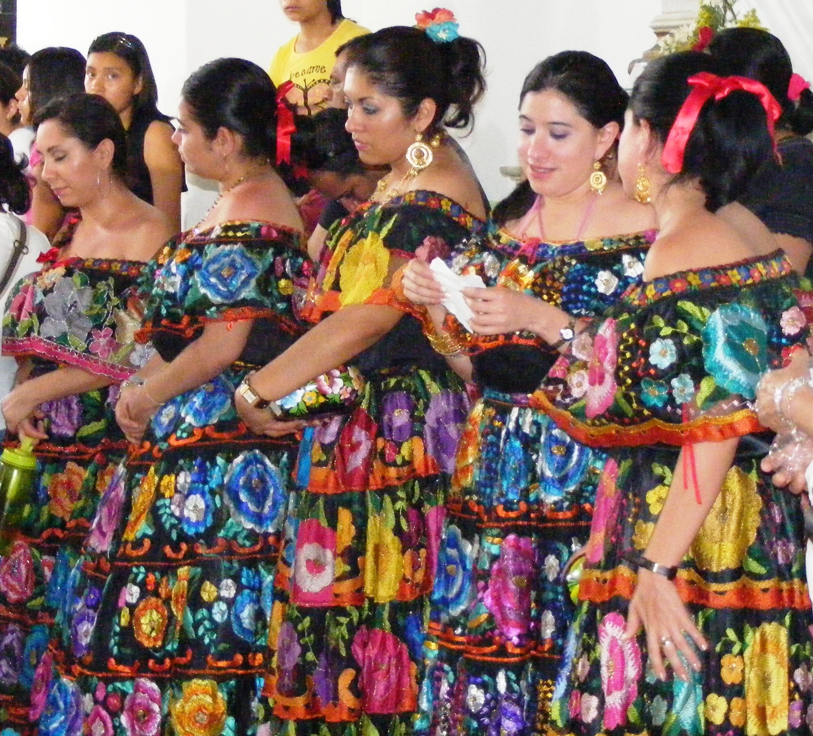
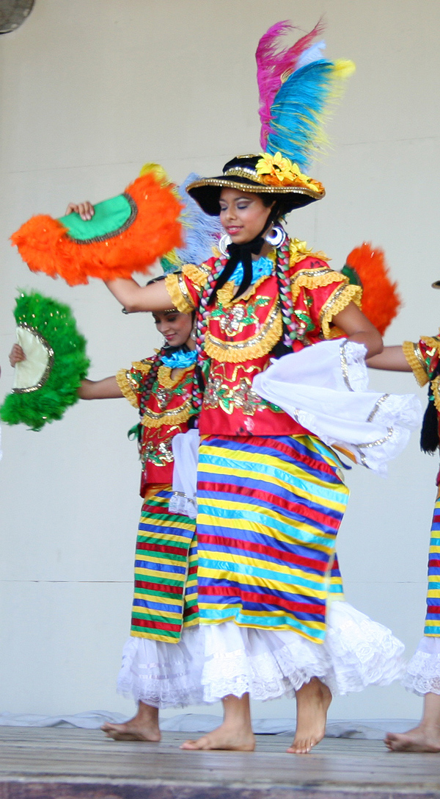
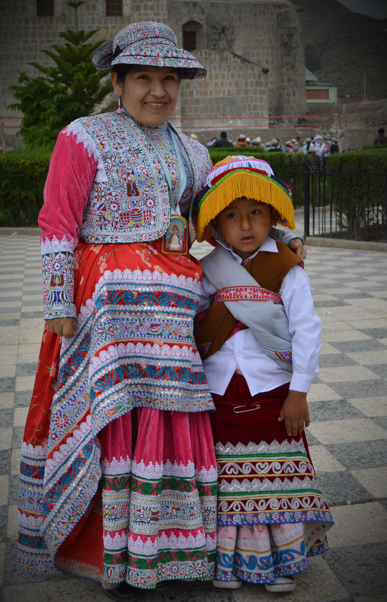
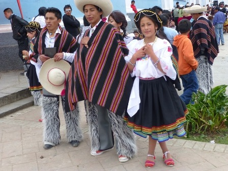
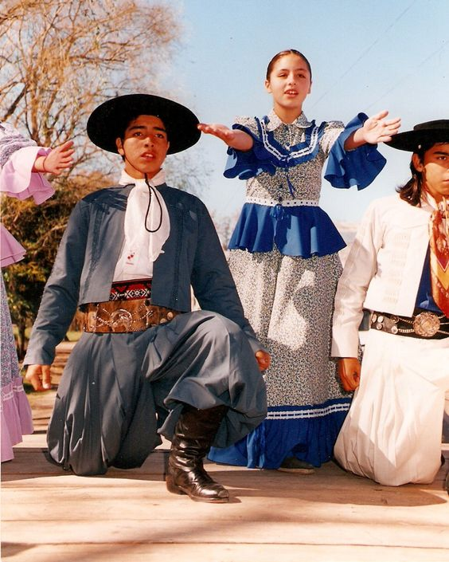

¿Por qué elegí estos países?
Elegí México, Nicaragua, Perú, Bolivia, Ecuador, Argentina y Chile porque representan distintas regiones de Latinoamérica y poseen una gran riqueza cultural reflejada en su vestimenta tradicional.
Cada uno de estos países cuenta con trajes típicos que muestran su historia, costumbres y tradiciones, utilizando colores, telas y diseños propios de su identidad nacional.
La selección de estos países permite apreciar la diversidad cultural del continente y entender cómo la vestimenta forma parte de la identidad de cada nación.
México
El traje típico de México se caracteriza por el uso de colores vivos y bordados artesanales que representan su cultura.
Nicaragua
En Nicaragua, los trajes tradicionales reflejan la historia y las costumbres del país, especialmente en danzas folclóricas.
Perú
Los trajes peruanos destacan por el uso de lana y diseños andinos que representan la herencia indígena.
Bolivia

El traje de la chola paceña es uno de los más representativos de Bolivia y simboliza identidad cultural.
Ecuador
En Ecuador, los trajes varían según la región y muestran una gran diversidad cultural.
Argentina
El traje del gaucho argentino representa la tradición rural y la historia del país.
Chile

El traje huaso es uno de los símbolos más importantes de la cultura chilena.